Prototyping Modules for Geospatial Analytics Shiny Application
Author
Chong Zhi Cheng
Published
October 27, 2024
Modified
November 3, 2024
Spatial Distribution Analysis of Educational Facilities in Jakarta:
A Comprehensive Study of Accessibility and Urban Planning
The spatial distribution of schools in Jakarta, Indonesia’s capital city, represents a critical aspect of educational accessibility and urban planning. As one of the world’s most densely populated metropolitan areas, Jakarta’s educational infrastructure directly impacts the lives of millions of students and their families. Understanding the spatial patterns, clustering, and relationships between school locations and socioeconomic factors is crucial for informed policy-making and urban development strategies.
Significance and Impact
Equitable access to education is fundamental to social mobility and economic development, particularly in rapidly growing urban centers like Jakarta. Several factors make this analysis particularly crucial:
Educational Equity: Spatial disparities in school distribution can perpetuate or exacerbate socioeconomic inequalities, as access to quality education often correlates with neighborhood demographics and income levels.
Urban Planning Challenges: Jakarta’s rapid urbanization and population growth create unique challenges for educational infrastructure planning, requiring evidence-based approaches to resource allocation.
Economic Implications: School accessibility directly affects property values, population movement patterns, and local economic development, making it a key consideration for urban development strategies.
Transportation and Infrastructure: Understanding school distribution patterns helps optimize transportation networks and reduce traffic congestion, a significant issue in Jakarta’s urban landscape.
Policy Development: Results from this analysis can inform evidence-based policy decisions about new school construction, resource allocation, and educational zoning regulations.
Research Objectives
Our research objectives encompass three primary areas of investigation:
Spatial Point Patterns Analysis for School Locations
LISA and HCSA Analysis of Schools
Geographically Weighted Regression Analysis
Project Overview and Scope
Project Goals and Deliverable
The primary objective of this research is to conduct a comprehensive spatial analysis of Jakarta’s educational infrastructure, with findings ultimately presented through an interactive Shiny application. This web-based platform will allow stakeholders to explore and interact with our analytical results, making complex spatial patterns and relationships accessible to policymakers, educators, and the public.
Collaborative Framework
This project represents a collaborative effort among three students, with work structured in the following phases:
Joint Research and Foundation (Team Effort)
Initial research and literature review
Data acquisition and preprocessing
Exploratory Data Analysis (EDA)
Problem formulation and methodology selection
The core analytical work has been distributed among team members, with each focusing on a specific aspect of spatial analysis:
Spatial Point Patterns Analysis for School Locations
This report specifically details the LISA and HCSA Analysis of Schools component of the larger project. While this document can be read independently, it is designed to be part of a larger analytical narrative. Readers are encouraged to review all three reports for a complete understanding of Jakarta’s educational spatial dynamics. The findings presented here complement and intersect with the other analytical streams.
Data Sources and Educational Context
Data Sources
This study utilizes three primary datasets:
School Location Dataset (complete_data.csv)
Source: Kaggle - Indonesia School Dataset with Province Data
The Indonesian education system comprises several distinct school types, each serving specific educational needs and age groups:
Primary Education
SD (Sekolah Dasar)
Elementary school for ages 6-12
Grades 1-6
Mandatory basic education
Core subjects: mathematics, science, language, social studies
SDLB (Sekolah Dasar Luar Biasa)
Special needs elementary school
Adapted curriculum for disabled students
Equivalent to SD grades 1-6
Individualized education programs
Secondary Education
SMP (Sekolah Menengah Pertama)
Junior high school for ages 12-15
Grades 7-9
Advanced curriculum building on SD foundation
SMPLB (Sekolah Menengah Pertama Luar Biasa)
Special needs junior high school
Modified curriculum for disabled students
Equivalent to SMP grades 7-9
Upper Secondary Education
SMA (Sekolah Menengah Atas)
Academic senior high school for ages 15-18
Grades 10-12
Streams: Natural Sciences (IPA), Social Sciences (IPS), Language
University preparation focus
SMK (Sekolah Menengah Kejuruan)
Vocational high school
Ages 15-18
Career-oriented curriculum
Direct workforce preparation
Special Education
SMLB (Sekolah Menengah Luar Biasa)
Special needs senior high school
Equivalent to SMA/SMK grades 10-12
Customized curriculum
SLB (Sekolah Luar Biasa)
Comprehensive special education
Covers all education levels
Specialized support services
Individualized learning programs
Data Loading and Processing
The foundation of our spatial analysis rests on the careful preparation and integration of multiple datasets that capture Jakarta’s educational landscape. This section details the systematic process of loading, cleaning, and standardizing three key data sources:
A comprehensive database of Indonesian schools from Kaggle
Administrative boundary data at the city level (ADM2)
Detailed village-level (kelurahan) boundary data
Our primary objectives in this data processing phase were to:
Isolate and clean Jakarta’s school data while excluding the Thousand Islands region
Standardize administrative boundary information across different geographic scales
Ensure consistent naming conventions across all datasets
Establish proper spatial relationships through coordinate system alignment
Particular attention was paid to creating meaningful categorical variables for school types and levels, while also incorporating crucial demographic information at the village level. This processed data provides the structured foundation necessary for our subsequent LISA and HCSA analyses, enabling us to meaningfully investigate spatial patterns in Jakarta’s educational infrastructure.
# Load required packagespacman::p_load( sf, # For spatial data handling tidyverse, # Data manipulation and visualization knitr, # For report generation viridis, # Color palettes patchwork, # Combine multiple plots gridExtra, # Arrange multiple plots kableExtra, # Enhanced tables sfdep, # Spatial dependence functions tmap, # Thematic mapping tmaptools, # Additional mapping tools scales, # Scale functions for visualization spdep, # Spatial dependence testing ggrepel, # Text and label repulsion spatstat, # Point pattern analysis GWmodel, # Geographically weighted models gtsummary, # Summary statistics olsrr, # OLS regression ClustGeo # Geographical clustering)
# Load raw school data from Kaggle datasetindo_schools_kaggle <-read_csv("data/aspatial/complete_data.csv")
# Process Jakarta schools datajakarta_schools <- indo_schools_kaggle %>%# Filter for Jakarta province, excluding Thousand Islandsfilter(province_name =="DKI JAKARTA", city_name !="Kab. Kepulauan Seribu") %>%# Remove entries with missing coordinatesfilter(!is.na(long) &!is.na(lat)) %>%# Convert to spatial features (sf) objectst_as_sf(coords =c("long", "lat"), crs =4326) %>%# Create new categorical variables for school level and typemutate(school_level =case_when( stage %in%c("SD", "SDLB") ~"Elementary", stage %in%c("SMP", "SMPLB") ~"Junior High", stage %in%c("SMA", "SMK", "SMLB") ~"Senior High",TRUE~"Special Education" ),school_type =if_else(status =="N", "Public", "Private") )
# Load and filter administrative boundary data (ADM2 level)adm2 <-st_read("data/geospatial", layer ="geoBoundaries-IDN-ADM2_simplified") %>%# Select only Jakarta's five administrative citiesfilter(shapeName %in%c("Kota Jakarta Barat", "Kota Jakarta Pusat","Kota Jakarta Selatan", "Kota Jakarta Timur","Kota Jakarta Utara" ))
Reading layer `geoBoundaries-IDN-ADM2_simplified' from data source
`C:\zcchong\IS415\Takehome_Ex\Takehome_Ex3\data\geospatial'
using driver `ESRI Shapefile'
Simple feature collection with 519 features and 5 fields
Geometry type: MULTIPOLYGON
Dimension: XY
Bounding box: xmin: 95.01115 ymin: -11.00762 xmax: 141.0194 ymax: 6.07693
Geodetic CRS: WGS 84
# Load and process detailed village-level boundary databatas <-st_read("data/geospatial", layer ="BATAS_DESA_DESEMBER_2019_DUKCAPIL_DKI_JAKARTA") %>%# Select relevant columns and rename for clarityselect(OBJECT_ID, PROVINSI, KAB_KOTA, KECAMATAN, DESA_KELUR, JUMLAH_PEN, JUMLAH_KK, LUAS_WILAY, KEPADATAN, geometry) %>%rename(province = PROVINSI,city = KAB_KOTA,district = KECAMATAN,subdistrict = DESA_KELUR,population = JUMLAH_PEN,total_families = JUMLAH_KK,area_size = LUAS_WILAY,popn_density = KEPADATAN ) %>%# Remove Thousand Islands and missing valuesfilter(!is.na(city) & city !="KEPULAUAN SERIBU") %>%# Standardize city namesmutate(city =case_when( city =="JAKARTA BARAT"~"Kota Jakarta Barat", city =="JAKARTA PUSAT"~"Kota Jakarta Pusat", city =="JAKARTA SELATAN"~"Kota Jakarta Selatan", city =="JAKARTA TIMUR"~"Kota Jakarta Timur", city =="JAKARTA UTARA"~"Kota Jakarta Utara",TRUE~ city ))
Reading layer `BATAS_DESA_DESEMBER_2019_DUKCAPIL_DKI_JAKARTA' from data source
`C:\zcchong\IS415\Takehome_Ex\Takehome_Ex3\data\geospatial'
using driver `ESRI Shapefile'
Simple feature collection with 269 features and 161 fields
Geometry type: MULTIPOLYGON
Dimension: XY
Bounding box: xmin: 106.3831 ymin: -6.370815 xmax: 106.9728 ymax: -5.184322
Geodetic CRS: WGS 84
# Create district name mapping for standardizationdistrict_mapping <-c("TAMAN SARI"="Kec. Taman Sari","KEMAYORAN"="Kec. Kemayoran","SAWAH BESAR"="Kec. Sawah Besar","GAMBIR"="Kec. Gambir","SENEN"="Kec. Senen","CEMPAKA PUTIH"="Kec. Cempaka Putih","MENTENG"="Kec. Menteng","TANAH ABANG"="Kec. Tanah Abang","JOHAR BARU"="Kec. Johar Baru","KOJA"="Kec. Koja","PENJARINGAN"="Kec. Penjaringan","TANJUNG PRIOK"="Kec. Tanjung Priok","CILINCING"="Kec. Cilincing","GROGOL PETAMBURAN"="Kec. Grogol Petamburan","PADEMANGAN"="Kec. Pademangan","KELAPA GADING"="Kec. Kelapa Gading","CENGKARENG"="Kec. Cengkareng","TAMBORA"="Kec. Tambora","KEBON JERUK"="Kec. Kebon Jeruk","KALIDERES"="Kec. Kali Deres","PAL MERAH"="Kec. Palmerah","JATINEGARA"="Kec. Jatinegara","KEMBANGAN"="Kec. Kembangan","TEBET"="Kec. Tebet","SETIABUDI"="Kec. Setia Budi","MAMPANG PRAPATAN"="Kec. Mampang Prapatan","PASAR MINGGU"="Kec. Pasar Minggu","KEBAYORAN LAMA"="Kec. Kebayoran Lama","KEBAYORAN BARU"="Kec. Kebayoran Baru","CILANDAK"="Kec. Cilandak","PESANGGRAHAN"="Kec. Pesanggrahan","PANCORAN"="Kec. Pancoran","JAGAKARSA"="Kec. Jagakarsa","MATRAMAN"="Kec. Matraman","PULOGADUNG"="Kec. Pulo Gadung","KRAMATJATI"="Kec. Kramat Jati","PASAR REBO"="Kec. Pasar Rebo","DUREN SAWIT"="Kec. Duren Sawit","MAKASAR"="Kec. Makasar","CIRACAS"="Kec. Ciracas","CIPAYUNG"="Kec. Cipayung","CAKUNG"="Kec. Cakung")
# Apply district name standardizationbatas <- batas %>%mutate(district = district_mapping[district])
Exploratory Data Analysis at the Provincial Level
Before diving into complex spatial statistics, we begin with an exploratory data analysis (EDA) at the provincial level to understand the basic distribution patterns of schools across Jakarta.
This initial exploration focuses on four key aspects:
The overall distribution of schools across Jakarta’s administrative cities,
The composition of different school levels in each city,
The spatial density of schools,
The relationship between school distribution and population density.
Overall Distribution of Schools
# Plot 1: Basic distribution of schools across citiesggplot(data = jakarta_schools) +# Create bar chart counting schools per citygeom_bar(aes(x = city_name, fill = city_name)) +# Use plasma color palette for distinctionscale_fill_viridis_d(option ="plasma") +theme_minimal() +theme(# Rotate x-axis labels for better readabilityaxis.text.x =element_text(angle =45, hjust =1),plot.title =element_text(size =12, face ="bold"),# Remove redundant legendlegend.position ="none" ) +labs(title ="Distribution of Schools Across Jakarta",x ="City",y ="Number of Schools" )
Distribution of School Levels
# Plot 2: Distribution of school levels by cityggplot(data = jakarta_schools) +# Stacked bar chart showing school level compositiongeom_bar(aes(x = city_name, fill = school_level)) +scale_fill_viridis_d(option ="plasma") +theme_minimal() +theme(axis.text.x =element_text(angle =45, hjust =1),plot.title =element_text(size =12, face ="bold") ) +labs(title ="Distribution of School Levels Across Jakarta",x ="City",y ="Number of Schools",fill ="School Level" )
School Density Across Jakarta
# Plot 3: Spatial distribution of schoolsggplot() +# Create choropleth map using administrative boundariesgeom_sf(data = adm2, # Count number of schools in each administrative regionaes(fill =lengths(st_intersects(adm2, jakarta_schools)))) +scale_fill_viridis_c(option ="plasma") +theme_minimal() +labs(title ="School Density Across Jakarta",fill ="Number of\nSchools" )
Population Density in Jakarta
# Plot 4: Population density distributionggplot() +# Create choropleth map of population densitygeom_sf(data = batas, aes(fill = popn_density)) +scale_fill_viridis_c(option ="plasma",# Format large numbers with commaslabels = scales::comma_format() ) +theme_minimal() +labs(title ="Population Density in Jakarta",fill ="Population\nDensity\n(per km²)" )
Key Insights
Geographic Disparities: There are clear disparities in school distribution across Jakarta’s regions, which may require attention from educational planners.
Educational Level Balance: While elementary schools dominate, there appears to be a reasonable distribution across educational levels, though some areas might benefit from more balanced development.
Kernel Density Estimation Analysis at Provincial Level
Following our initial exploratory analysis, we employ Kernel Density Estimation (KDE) to gain a more nuanced understanding of school distribution patterns across Jakarta. KDE is particularly valuable for this analysis as it helps identify areas of high and low school concentration by creating a continuous surface of density estimates.
This technique goes beyond simple point mapping by considering the spatial influence of each school location on its surroundings, effectively highlighting clusters and gaps in educational infrastructure. By converting our data to UTM projection and applying appropriate edge corrections, we ensure accurate distance calculations and reliable density estimates, especially near the study area boundaries.
# Convert coordinate systems for accurate distance measurement# UTM Zone 48S (EPSG:32748) is appropriate for Jakartajakarta_schools_utm <-st_transform(jakarta_schools, 32748)adm2_utm <-st_transform(adm2, 32748)
# Extract coordinates and add small random noise to prevent exact duplicates# This helps avoid computational issues in point pattern analysiscoords <-st_coordinates(jakarta_schools_utm)jittered_coords <- coords +matrix(runif(nrow(coords) *2, -0.1, 0.1), # Add noise between -0.1 and 0.1 metersncol =2)
# Create observation window from administrative boundary# This defines the study area for the point pattern analysiswindow <-as.owin(st_union(adm2_utm))# Filter points to ensure they fall within the study area# This step is crucial for accurate density estimationinside <-inside.owin(x = jittered_coords[,1], y = jittered_coords[,2], w = window)valid_coords <- jittered_coords[inside,]
# Create point pattern object for spatial statisticspoints <-ppp(x = valid_coords[,1],y = valid_coords[,2],window = window)# Diagnostic prints to verify data integrityprint(paste("Original points:", nrow(coords)))
# Perform kernel density estimation# bw.diggle provides data-driven bandwidth selection# edge=TRUE applies edge correction for boundary effectskde <-density.ppp(points, sigma =bw.diggle(points),edge =TRUE)# Convert KDE results to data frame for further analysis/visualizationkde_df <-as.data.frame(kde)
ggplot() +geom_sf(data = adm2_utm, fill ="transparent") +geom_tile(data = kde_df, aes(x = x, y = y, fill = value)) +scale_fill_viridis_c(option ="plasma") +theme_minimal() +labs(title ="Kernel Density Estimation of All Schools",subtitle =paste0("Based on ", sum(inside), " school locations"),fill ="Density" )
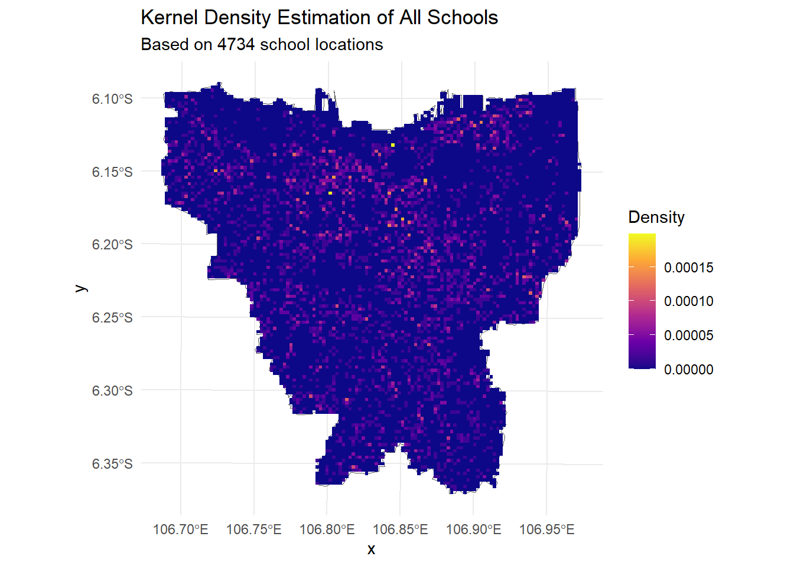
Distribution Patterns
The KDE analysis of 4,734 schools across Jakarta shows:
High-Density Clusters (Yellow/Orange)
Several distinct hotspots visible across the map
Particularly noticeable in scattered locations across the northern and central regions
Maximum density reaches 0.00015 schools per square meter
Medium-Density Areas (Pink/Light Purple)
Form connecting networks between the high-density clusters
More prevalent in the central portions of the map
Low-Density Regions (Dark Purple)
Large portions of Jakarta, especially in the southern regions
Shows minimal school presence compared to other areas
The distribution appears notably clustered rather than uniform, suggesting spatial variations in school accessibility across different parts of Jakarta.
1.2.2 KDE by School Level
# Create an empty list to store KDE plots for each school levelkde_plots <-list()# Iterate through each unique school level in the datasetfor(level inunique(jakarta_schools_utm$school_level)) {# Filter schools for current level schools_subset <- jakarta_schools_utm[jakarta_schools_utm$school_level == level,]# Extract coordinates from spatial data coords <-st_coordinates(schools_subset)# Add small random noise to prevent exact duplicates# Important for computational stability jittered_coords <- coords +matrix(runif(nrow(coords) *2, -0.1, 0.1), # Random noise between -0.1 and 0.1 metersncol =2 )# Check which points fall within study area boundary inside <-inside.owin(x = jittered_coords[,1],y = jittered_coords[,2],w = window) valid_coords <- jittered_coords[inside,]# Create point pattern object for spatial analysis points_subset <-ppp(x = valid_coords[,1],y = valid_coords[,2],window = window )# Perform kernel density estimation# Using Diggle's method for bandwidth selection# Edge correction applied for boundary effects kde_level <-density.ppp(points_subset,sigma =bw.diggle(points_subset),edge =TRUE)# Convert KDE results to data frame for plotting kde_df <-as.data.frame(kde_level)# Create density plot using ggplot2 kde_plots[[level]] <-ggplot() +# Add administrative boundariesgeom_sf(data = adm2_utm, fill ="transparent") +# Add density heatmapgeom_tile(data = kde_df, aes(x = x, y = y, fill = value)) +# Use plasma color scheme for density visualizationscale_fill_viridis_c(option ="plasma") +theme_minimal() +labs(title =paste("School Density:", level),# Show number of schools included in analysissubtitle =paste0("Based on ", sum(inside), " school locations"),fill ="Density" )}walk(kde_plots, print)
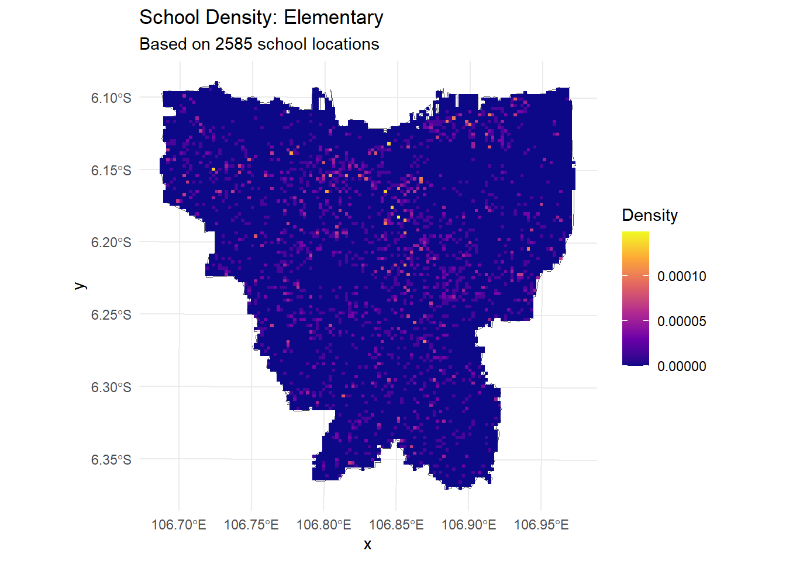
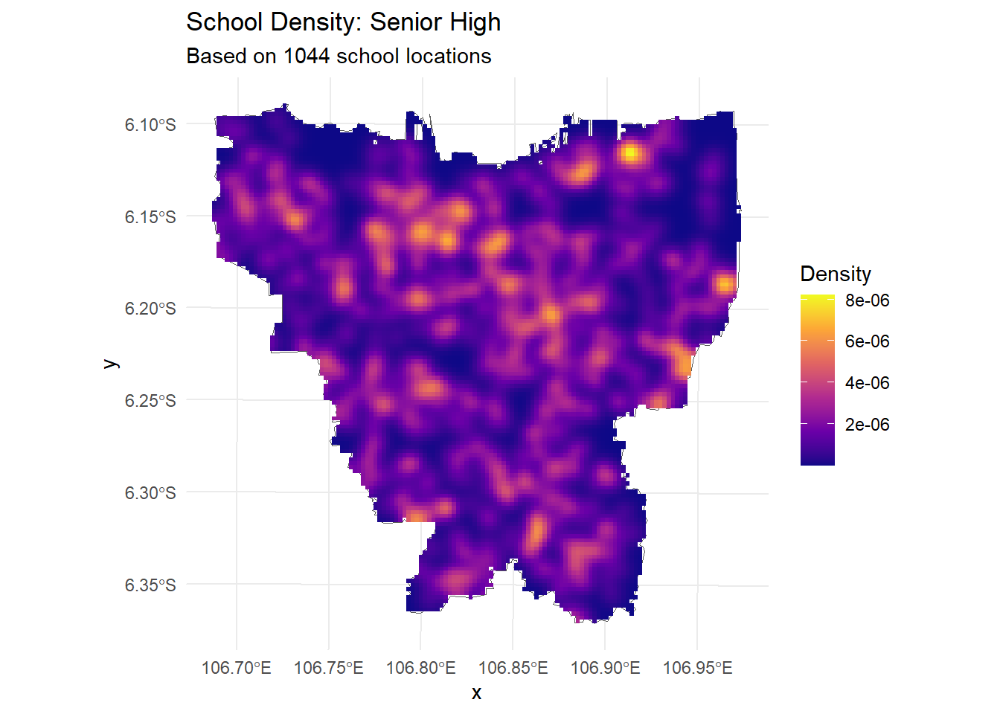
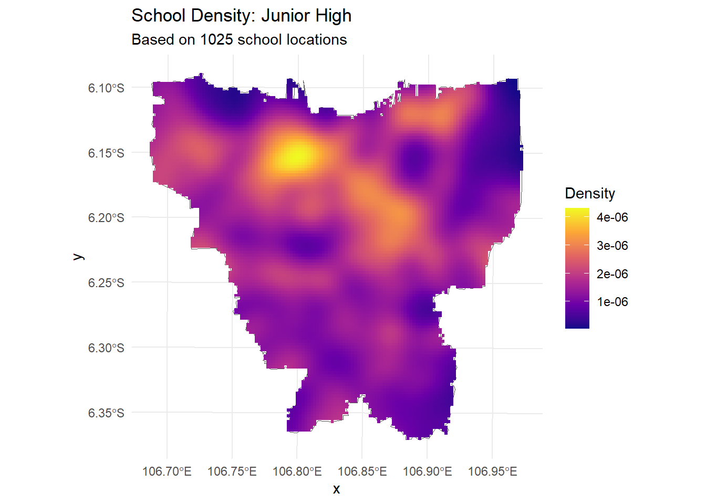
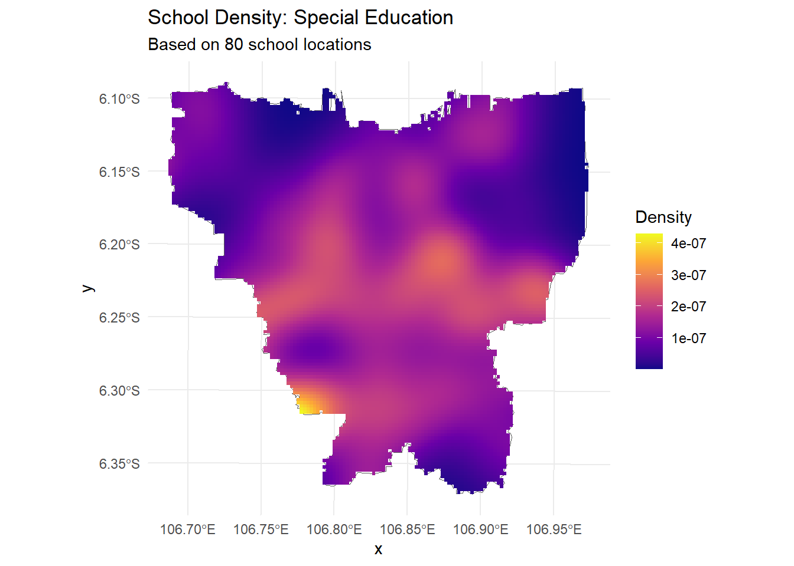
Numbers and Coverage
Elementary (2,585 schools): Most widely distributed, showing small scattered hotspots across Jakarta
Junior High (1,025 schools): Strong clustering pattern, with prominent hotspots in central areas
Senior High (1,044 schools): Concentrated clusters, particularly in northern and central regions
Special Education (80 schools): Limited coverage with sparse distribution
Exploratory Data Analysis at the City Level
School Distribution by City
# Convert boundaries to UTM projection for accurate spatial operationsbatas_utm <-st_transform(batas, 32748)# Initialize list to store individual city mapscity_maps <-list()# Create separate maps for each cityfor(city inunique(batas$city)) {# Extract boundary for current city city_boundary <- batas_utm[batas_utm$city == city,]# Find schools within current city boundary city_schools <- jakarta_schools_utm[st_intersects(jakarta_schools_utm, st_union(city_boundary)) %>% lengths >0,]# Create map for current city city_maps[[city]] <-ggplot() +# Add population density choroplethgeom_sf(data = city_boundary, aes(fill = popn_density)) +# Add school points colored by levelgeom_sf(data = city_schools,aes(color = school_level),size =2,alpha =0.6) +# Set color scalesscale_fill_viridis_c(option ="plasma",name ="Population\nDensity",labels = scales::comma_format() ) +scale_color_viridis_d(option ="plasma",name ="School Level" ) +# Customize themetheme_minimal() +theme(plot.title =element_text(size =14, face ="bold"),plot.subtitle =element_text(size =12),legend.title =element_text(size =10),legend.text =element_text(size =8),plot.margin =margin(10, 10, 10, 10) ) +labs(title =paste("Schools Distribution in", city) )}# Display all city mapswalk(names(city_maps), function(city) {print(city_maps[[city]])})
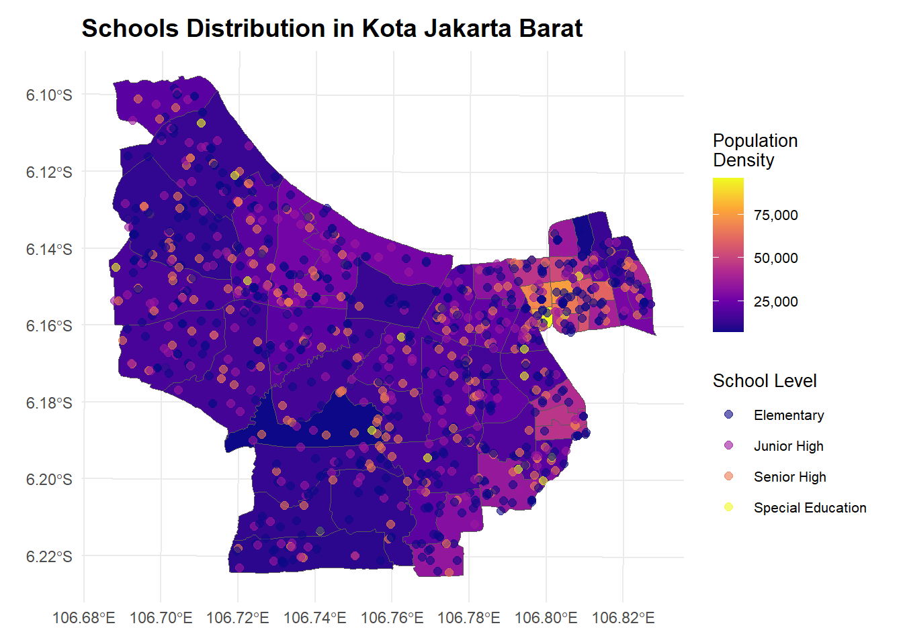
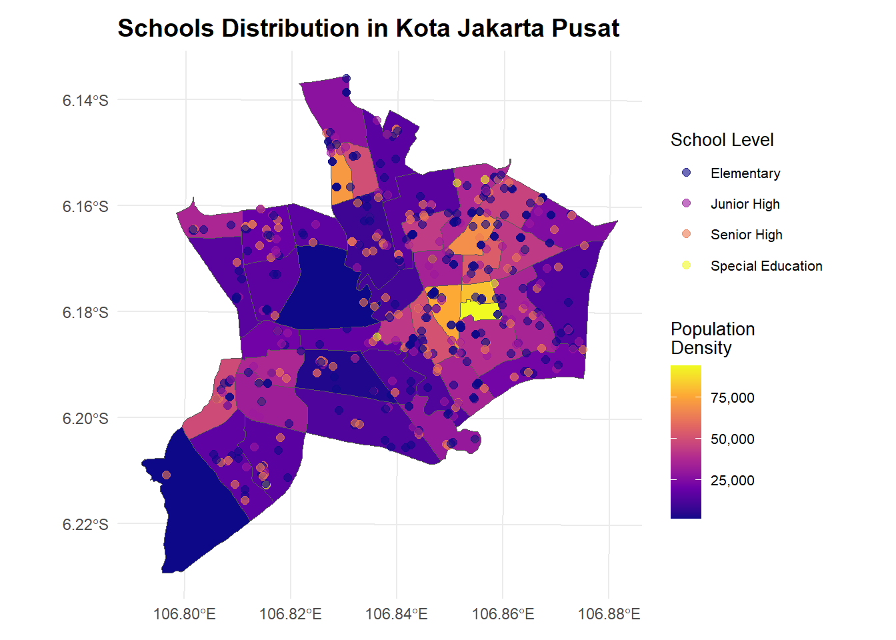
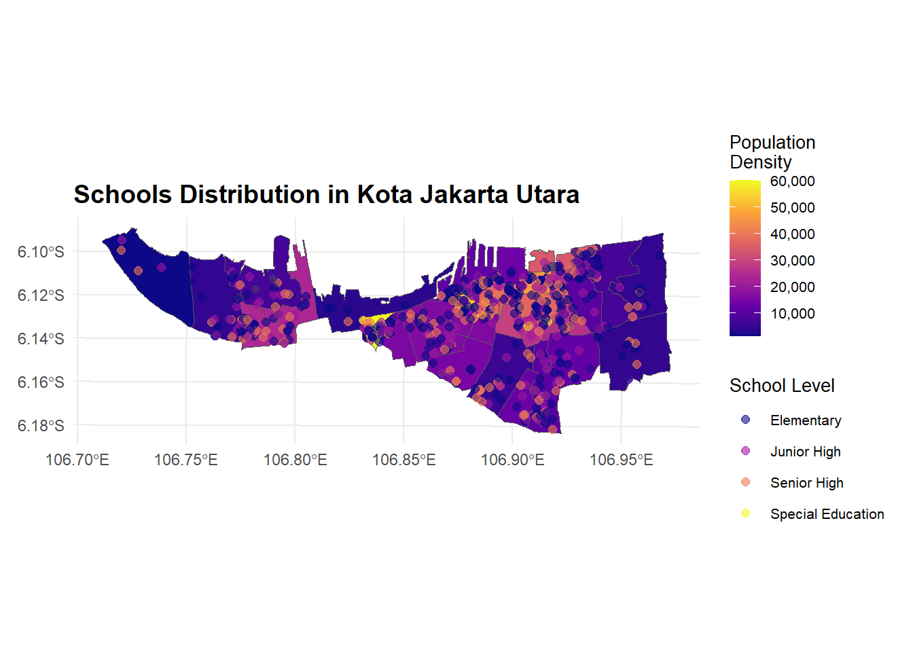
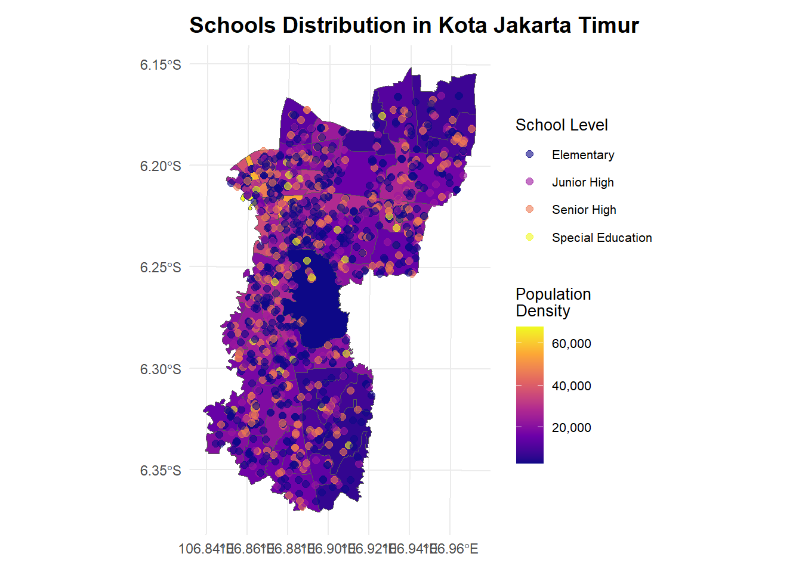
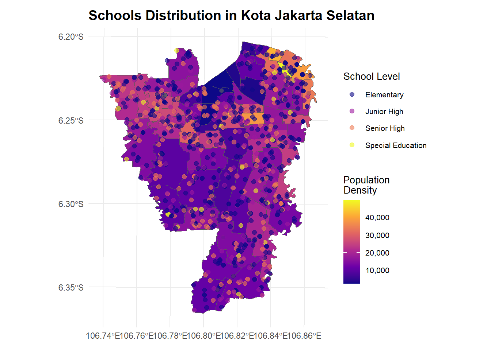
Public School Ratio by City
# Calculate the proportion of public schools for each citypublic_ratio <- jakarta_schools_utm %>%# Group data by citygroup_by(city_name) %>%# Calculate summary statisticssummarise(total_schools =n(), # Total number of schoolspublic_schools =sum(school_type =="Public"), # Count of public schoolspublic_ratio = public_schools / total_schools, # Calculate proportion.groups ="drop"# Drop grouping )# Create bar plot of public school ratiosggplot(public_ratio) +# Create bars, reordered by public_ratiogeom_bar(aes(x =reorder(city_name, public_ratio), # Order bars by ratioy = public_ratio, fill = city_name), stat ="identity") +# Use plasma color palette from viridisscale_fill_viridis_d(option ="plasma") +# Apply minimal themetheme_minimal() +# Customize theme elementstheme(axis.text.x =element_text(angle =45, hjust =1), # Rotate x-axis labelslegend.position ="none", # Remove legendplot.title =element_text(size =14, face ="bold"), # Format titleplot.subtitle =element_text(size =12) # Format subtitle ) +# Add plot labelslabs(title ="Public School Ratio by City",subtitle ="Proportion of public schools to total schools",x ="City",y ="Proportion of Public Schools" )
Public School Ratio Analysis - Key Findings
Distribution Across Cities
Highest Ratio: Kota Jakarta Selatan (~52% public schools)
Lowest Ratio: Kota Jakarta Utara (~38% public schools)
Overall Range: ~14% difference between highest and lowest
City-Specific Breakdown
Kota Jakarta Selatan (Pink)
Highest proportion of public schools (~52%)
Suggests strongest public education presence
Kota Jakarta Timur (Orange)
Second-highest ratio (~51%)
Nearly matches South Jakarta’s public school proportion
Kota Jakarta Pusat (Purple)
Middle range (~50%)
Shows balanced public-private distribution
Kota Jakarta Barat (Dark Blue)
Lower ratio (~40%)
Shows stronger private school presence
Kota Jakarta Utara (Yellow)
Lowest public school ratio (~38%)
Indicates dominance of private education providers
Kernel Density Estimation Analysis at City Level
# Initialize list to store KDE results for each citykde_city_level <-list()# Perform KDE analysis for each cityfor(city inunique(jakarta_schools_utm$city_name)) {# Filter data for current city city_schools <- jakarta_schools_utm[jakarta_schools_utm$city_name == city,] city_boundary <- adm2_utm[adm2_utm$shapeName == city,] city_window <-as.owin(st_union(city_boundary))# Calculate window size for bandwidth consideration win_size <-sqrt(area.owin(city_window)) kde_city_level[[city]] <-list()# Process all schools in city coords <-st_coordinates(city_schools) jittered_coords <- coords +matrix(runif(nrow(coords) *2, -0.1, 0.1), # Add small random noisencol =2 )# Filter valid points inside <-inside.owin(x = jittered_coords[,1],y = jittered_coords[,2],w = city_window) valid_coords <- jittered_coords[inside,]# Perform KDE if enough points availableif(nrow(valid_coords) >=4) { points_ppp <-ppp(x = valid_coords[,1],y = valid_coords[,2],window = city_window )# Calculate bandwidth using Scott's rule h <-bw.scott(points_ppp) kde <-density.ppp(points_ppp, sigma = h,edge =TRUE,at ="pixels",dimyx =c(128, 128)) kde_city_level[[city]][["All"]] <-list(kde = kde,n_points =nrow(valid_coords),bandwidth = h ) }# Repeat analysis for each school levelfor(level inunique(city_schools$school_level)) { level_schools <- city_schools[city_schools$school_level == level,] coords <-st_coordinates(level_schools)# Add jitter and filter points jittered_coords <- coords +matrix(runif(nrow(coords) *2, -0.1, 0.1),ncol =2 ) inside <-inside.owin(x = jittered_coords[,1],y = jittered_coords[,2],w = city_window) valid_coords <- jittered_coords[inside,]# Perform KDE if enough pointsif(nrow(valid_coords) >=4) { points_ppp <-ppp(x = valid_coords[,1],y = valid_coords[,2],window = city_window ) h <-bw.scott(points_ppp) kde <-density.ppp(points_ppp, sigma = h,edge =TRUE,at ="pixels",dimyx =c(128, 128)) kde_city_level[[city]][[level]] <-list(kde = kde,n_points =nrow(valid_coords),bandwidth = h ) } }}
# Calculate and store density metricsdensity_metrics <-data.frame(city =character(),level =character(),max_density =numeric(),mean_density =numeric(),relative_density =numeric(),stringsAsFactors =FALSE)# Calculate relative densities for each city and school levelfor(city innames(kde_city_level)) { city_max <-max(kde_city_level[[city]][["All"]]$kde$v, na.rm =TRUE)for(level innames(kde_city_level[[city]])) {if(level !="All") { kde_data <- kde_city_level[[city]][[level]] density_metrics <-rbind(density_metrics, data.frame(city = city,level = level,max_density =max(kde_data$kde$v, na.rm =TRUE),mean_density =mean(kde_data$kde$v, na.rm =TRUE),relative_density =max(kde_data$kde$v, na.rm =TRUE) / city_max,stringsAsFactors =FALSE )) } }}# Create visualization of relative densitiesggplot(density_metrics, aes(x = level, y = relative_density, fill = city)) +geom_bar(stat ="identity", position ="dodge") +scale_fill_viridis_d(option ="plasma") +theme_minimal() +theme(axis.text.x =element_text(angle =45, hjust =1),plot.title =element_text(size =16, face ="bold"),axis.title =element_text(size =12),legend.title =element_text(size =12),legend.text =element_text(size =10),plot.margin =margin(20, 20, 20, 20) ) +labs(title ="Relative Density of School Types by City",subtitle ="Maximum density relative to overall school density",x ="School Level",y ="Relative Density",fill ="City" )
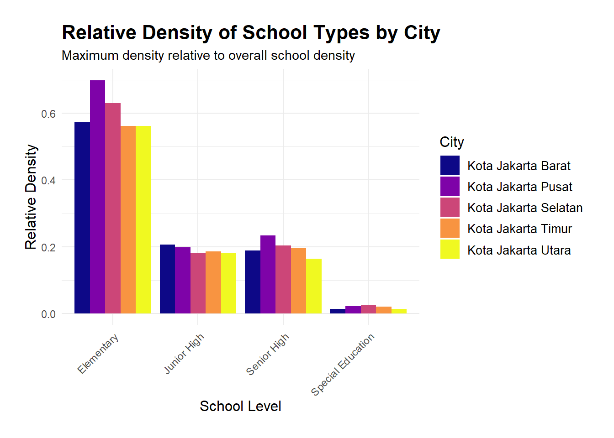
Key Findings - Relative Density Analysis
School Level Patterns
Elementary Schools
Highest relative density across all cities (~0.6-0.7)
Kota Jakarta Pusat shows highest concentration
Relatively consistent across cities
Secondary Education
Junior High: Moderate density (~0.2) across all cities
Senior High: Similar pattern to Junior High but slightly lower
Consistent pattern across cities
Special Education
Lowest relative density (<0.1) in all cities
Minimal variation between cities
Overall Observations
Clear hierarchical pattern: Elementary > Junior High > Senior High > Special Education
Remarkably consistent patterns across all five cities
Central Jakarta (Pusat) shows slightly higher densities across most school levels
LISA Analysis
# Correct aggregation to maintain separate districtsdistrict_boundaries <- batas_utm %>%group_by(city, district) %>%summarise(total_population =sum(population),total_area =sum(area_size),popn_density = total_population / total_area,# Maintain separate geometries for each districtdo_union =TRUE,.groups ='drop' )
# Spatial Analysis of Jakarta Educational Infrastructure# 1. Join school data with district boundaries# Purpose: Aggregate school-level data to district level# Input: jakarta_schools_utm (school points), district_boundaries (polygons)# Output: District-level summary statisticsdistrict_schools <-st_join(jakarta_schools_utm, st_transform(district_boundaries, st_crs(jakarta_schools_utm))) %>%st_drop_geometry() %>%group_by(district) %>%summarise(# Count total schools and public schoolstotal_schools =n(),public_schools =sum(school_type =="Public"),# Count schools by education levelelementary_count =sum(school_level =="Elementary"),junior_high_count =sum(school_level =="Junior High"),senior_high_count =sum(school_level =="Senior High"),special_ed_count =sum(school_level =="Special Education") )# 2. Calculate district-level metrics# Purpose: Compute density and ratio metrics for analysis# Output: District boundaries with added metricsdistrict_metrics <- district_boundaries %>%left_join(district_schools, by ="district") %>%mutate(# Calculate school density (schools per square km)school_density = total_schools / total_area,elementary_density = elementary_count / total_area,junior_high_density = junior_high_count / total_area,senior_high_density = senior_high_count / total_area,special_ed_density = special_ed_count / total_area,# Calculate public school ratiopublic_ratio = public_schools / total_schools )# 3. Create spatial weights matrix# Purpose: Define spatial relationships between districts# Method: Queen contiguity (districts sharing any boundary point are neighbors)district_neighbors <-poly2nb(district_metrics, queen =TRUE)district_weights <-nb2listw(district_neighbors, style ="W")# 4. Define metrics for analysis# List of variables to be analyzed with LISA statisticsmetrics_to_analyze <-c("school_density","elementary_density","junior_high_density","senior_high_density","special_ed_density","public_ratio")# 5. Calculate LISA statistics# Purpose: Identify spatial clusters and outliers# Method: Local Moran's I with significance testinglisa_results <-lapply(metrics_to_analyze, function(metric) {# Calculate Local Moran's I local_moran <-localmoran(district_metrics[[metric]], district_weights)# Calculate spatial lag for clustering lag_var <-lag.listw(district_weights, district_metrics[[metric]])# Standardize variables for comparison z_var <-scale(district_metrics[[metric]]) z_lag <-scale(lag_var)# Classify clusters based on significance (p < 0.05) clusters <-rep("Not Significant", length(z_var)) sig_indices <-which(local_moran[, "Pr(z != E(Ii))"] <0.05)# Determine cluster types:# High-High: High values surrounded by high values (hot spots)# Low-Low: Low values surrounded by low values (cold spots)# High-Low: High values surrounded by low values (spatial outliers)# Low-High: Low values surrounded by high values (spatial outliers)for(i in sig_indices) {if(z_var[i] >0&& z_lag[i] >0) clusters[i] <-"High-High"elseif(z_var[i] <0&& z_lag[i] <0) clusters[i] <-"Low-Low"elseif(z_var[i] >0&& z_lag[i] <0) clusters[i] <-"High-Low"elseif(z_var[i] <0&& z_lag[i] >0) clusters[i] <-"Low-High" }return(list(clusters = clusters,local_i = local_moran[, "Ii"],p_values = local_moran[, "Pr(z != E(Ii))"] ))})names(lisa_results) <- metrics_to_analyze# 6. Create LISA maps# Purpose: Visualize spatial clusters and outliers# Output: ggplot maps for each metriclisa_maps <-lapply(metrics_to_analyze, function(metric) { district_metrics$cluster <- lisa_results[[metric]]$clustersggplot(district_metrics) +geom_sf(aes(fill = cluster)) +scale_fill_manual(values =c("High-High"="#FF0000", # Hot spots (red)"Low-Low"="#0000FF", # Cold spots (blue)"High-Low"="#FF69B4", # High outliers (pink)"Low-High"="#87CEEB", # Low outliers (light blue)"Not Significant"="#CCCCCC"# Not significant (gray) )) +theme_minimal() +labs(title =paste("LISA Cluster Map:", gsub("_", " ", metric)),fill ="Cluster Type" )})names(lisa_maps) <- metrics_to_analyze# 7. Display maps# Print individual maps for each metricprint(lisa_maps$school_density)
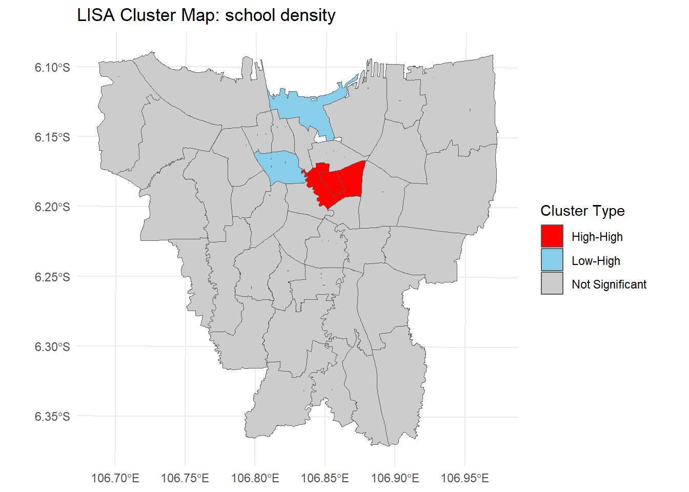
print(lisa_maps$elementary_density)
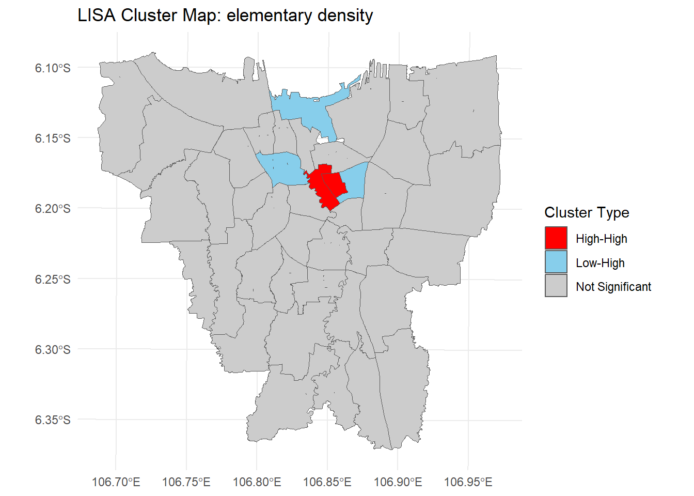
print(lisa_maps$junior_high_density)
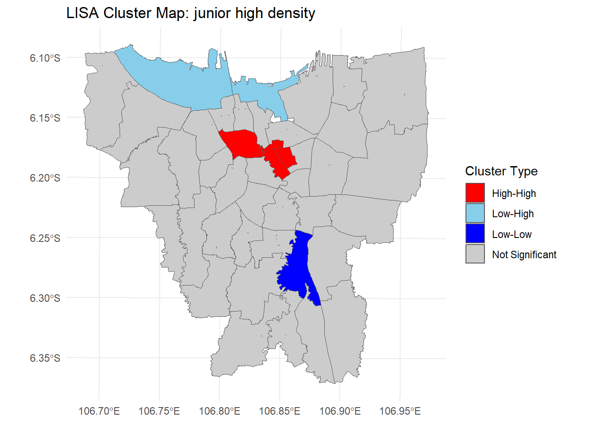
print(lisa_maps$senior_high_density)
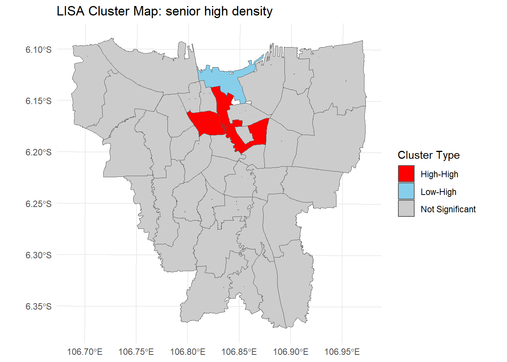
print(lisa_maps$special_ed_density)
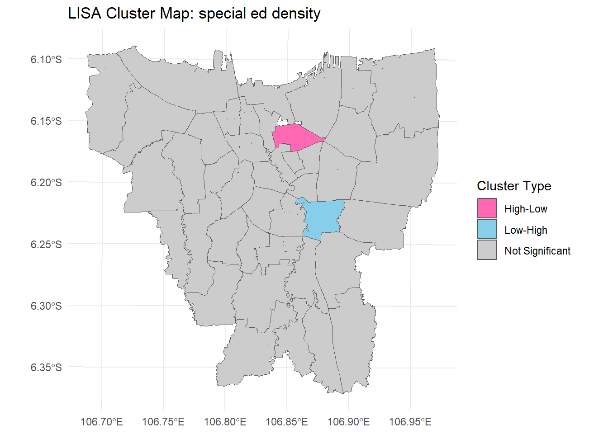
print(lisa_maps$public_ratio)
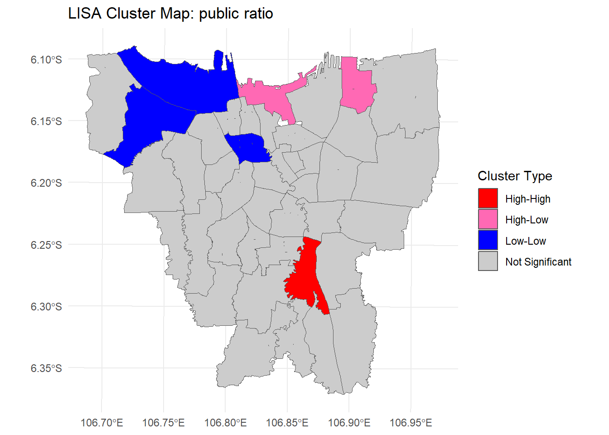
# Create a summary of LISA cluster patterns for each metriclisa_summary <-lapply(metrics_to_analyze, function(metric) {# Get cluster counts cluster_counts <-table(lisa_results[[metric]]$clusters)# Calculate percentages cluster_percentages <-prop.table(cluster_counts) *100# Identify significant districts significant_districts <- district_metrics$district[lisa_results[[metric]]$clusters !="Not Significant"]# Calculate global Moran's I global_moran <-moran.test(district_metrics[[metric]], district_weights)# Return summarylist(metric = metric,cluster_counts = cluster_counts,cluster_percentages = cluster_percentages,significant_districts = significant_districts,global_moran = global_moran )})names(lisa_summary) <- metrics_to_analyze# Print comprehensive analysis for each metricfor(metric in metrics_to_analyze) {cat("\n\n=== Analysis for", gsub("_", " ", metric), "===\n")# Global spatial autocorrelationcat("\nGlobal Moran's I:\n")cat("Value:", round(lisa_summary[[metric]]$global_moran$estimate[1], 4), "\n")cat("p-value:", round(lisa_summary[[metric]]$global_moran$p.value, 4), "\n")# Cluster distributioncat("\nCluster Distribution:\n")print(round(lisa_summary[[metric]]$cluster_percentages, 2))# List significant clusterscat("\nSignificant Districts:\n")for(district in lisa_summary[[metric]]$significant_districts) { cluster_type <- lisa_results[[metric]]$clusters[district_metrics$district == district]cat(sprintf("%s: %s\n", district, cluster_type)) }}
=== Analysis for school density ===
Global Moran's I:
Value: 0.2536
p-value: 0.0013
Cluster Distribution:
High-High Low-High Not Significant
7.14 4.76 88.10
Significant Districts:
Kec. Cempaka Putih: High-High
Kec. Gambir: Low-High
Kec. Johar Baru: High-High
Kec. Senen: High-High
Kec. Pademangan: Low-High
=== Analysis for elementary density ===
Global Moran's I:
Value: 0.2306
p-value: 0.0024
Cluster Distribution:
High-High Low-High Not Significant
4.76 7.14 88.10
Significant Districts:
Kec. Cempaka Putih: Low-High
Kec. Gambir: Low-High
Kec. Johar Baru: High-High
Kec. Senen: High-High
Kec. Pademangan: Low-High
=== Analysis for junior high density ===
Global Moran's I:
Value: 0.2588
p-value: 0.0011
Cluster Distribution:
High-High Low-High Low-Low Not Significant
7.14 4.76 2.38 85.71
Significant Districts:
Kec. Gambir: High-High
Kec. Johar Baru: High-High
Kec. Senen: High-High
Kec. Kramat Jati: Low-Low
Kec. Pademangan: Low-High
Kec. Penjaringan: Low-High
=== Analysis for senior high density ===
Global Moran's I:
Value: 0.2148
p-value: 0.0051
Cluster Distribution:
High-High Low-High Not Significant
9.52 2.38 88.10
Significant Districts:
Kec. Cempaka Putih: High-High
Kec. Gambir: High-High
Kec. Sawah Besar: High-High
Kec. Senen: High-High
Kec. Pademangan: Low-High
=== Analysis for special ed density ===
Global Moran's I:
Value: -0.0218
p-value: 0.4891
Cluster Distribution:
High-Low Low-High Not Significant
2.38 2.38 95.24
Significant Districts:
Kec. Kemayoran: High-Low
Kec. Jatinegara: Low-High
=== Analysis for public ratio ===
Global Moran's I:
Value: 0.2126
p-value: 0.0053
Cluster Distribution:
High-High High-Low Low-Low Not Significant
2.38 4.76 7.14 85.71
Significant Districts:
Kec. Cengkareng: Low-Low
Kec. Gambir: Low-Low
Kec. Kramat Jati: High-High
Kec. Koja: High-Low
Kec. Pademangan: High-Low
Kec. Penjaringan: Low-Low
# Create numeric dataframe for correlationmetric_data <-data.frame(school_density =as.numeric(district_metrics$school_density),elementary_density =as.numeric(district_metrics$elementary_density),junior_high_density =as.numeric(district_metrics$junior_high_density),senior_high_density =as.numeric(district_metrics$senior_high_density),special_ed_density =as.numeric(district_metrics$special_ed_density),public_ratio =as.numeric(district_metrics$public_ratio))# Calculate correlation matrixcorrelation_matrix <-cor(metric_data, use ="complete.obs")print(round(correlation_matrix, 3))
=== Hot Spot Analysis for school density ===
Cluster Distribution:
Cold Spot (99%) Hot Spot (99%) Not Significant
76.19 21.43 2.38
Significant Districts:
Kec. Cengkareng: Cold Spot (99%)
Kec. Grogol Petamburan: Hot Spot (99%)
Kec. Kali Deres: Cold Spot (99%)
Kec. Kebon Jeruk: Cold Spot (99%)
Kec. Kembangan: Cold Spot (99%)
Kec. Palmerah: Hot Spot (99%)
Kec. Taman Sari: Cold Spot (99%)
Kec. Tambora: Cold Spot (99%)
Kec. Cempaka Putih: Hot Spot (99%)
Kec. Gambir: Cold Spot (99%)
Kec. Johar Baru: Cold Spot (99%)
Kec. Kemayoran: Cold Spot (99%)
Kec. Menteng: Cold Spot (99%)
Kec. Sawah Besar: Hot Spot (99%)
Kec. Tanah Abang: Cold Spot (99%)
Kec. Cilandak: Cold Spot (99%)
Kec. Jagakarsa: Cold Spot (99%)
Kec. Kebayoran Baru: Cold Spot (99%)
Kec. Kebayoran Lama: Cold Spot (99%)
Kec. Mampang Prapatan: Cold Spot (99%)
Kec. Pancoran: Cold Spot (99%)
Kec. Pasar Minggu: Cold Spot (99%)
Kec. Pesanggrahan: Cold Spot (99%)
Kec. Setia Budi: Cold Spot (99%)
Kec. Tebet: Hot Spot (99%)
Kec. Cakung: Cold Spot (99%)
Kec. Cipayung: Cold Spot (99%)
Kec. Ciracas: Cold Spot (99%)
Kec. Duren Sawit: Hot Spot (99%)
Kec. Jatinegara: Hot Spot (99%)
Kec. Kramat Jati: Cold Spot (99%)
Kec. Makasar: Cold Spot (99%)
Kec. Matraman: Cold Spot (99%)
Kec. Pasar Rebo: Cold Spot (99%)
Kec. Pulo Gadung: Hot Spot (99%)
Kec. Cilincing: Cold Spot (99%)
Kec. Kelapa Gading: Cold Spot (99%)
Kec. Koja: Hot Spot (99%)
Kec. Pademangan: Cold Spot (99%)
Kec. Penjaringan: Cold Spot (99%)
Kec. Tanjung Priok: Cold Spot (99%)
Z-score range: -939.718 to 721.451
=== Hot Spot Analysis for elementary density ===
Cluster Distribution:
Cold Spot (95%) Cold Spot (99%) Hot Spot (99%) Not Significant
2.38 76.19 14.29 7.14
Significant Districts:
Kec. Cengkareng: Cold Spot (99%)
Kec. Grogol Petamburan: Hot Spot (99%)
Kec. Kali Deres: Cold Spot (99%)
Kec. Kebon Jeruk: Cold Spot (99%)
Kec. Kembangan: Cold Spot (99%)
Kec. Palmerah: Hot Spot (99%)
Kec. Tambora: Cold Spot (99%)
Kec. Cempaka Putih: Cold Spot (99%)
Kec. Gambir: Cold Spot (99%)
Kec. Johar Baru: Cold Spot (99%)
Kec. Kemayoran: Cold Spot (99%)
Kec. Menteng: Cold Spot (99%)
Kec. Sawah Besar: Hot Spot (99%)
Kec. Tanah Abang: Cold Spot (99%)
Kec. Cilandak: Cold Spot (99%)
Kec. Jagakarsa: Cold Spot (99%)
Kec. Kebayoran Baru: Cold Spot (99%)
Kec. Kebayoran Lama: Cold Spot (99%)
Kec. Mampang Prapatan: Cold Spot (99%)
Kec. Pancoran: Cold Spot (99%)
Kec. Pasar Minggu: Cold Spot (99%)
Kec. Pesanggrahan: Cold Spot (99%)
Kec. Setia Budi: Cold Spot (99%)
Kec. Tebet: Hot Spot (99%)
Kec. Cakung: Cold Spot (99%)
Kec. Cipayung: Cold Spot (99%)
Kec. Ciracas: Cold Spot (99%)
Kec. Duren Sawit: Hot Spot (99%)
Kec. Jatinegara: Hot Spot (99%)
Kec. Kramat Jati: Cold Spot (99%)
Kec. Makasar: Cold Spot (99%)
Kec. Matraman: Cold Spot (95%)
Kec. Pasar Rebo: Cold Spot (99%)
Kec. Pulo Gadung: Cold Spot (99%)
Kec. Cilincing: Cold Spot (99%)
Kec. Kelapa Gading: Cold Spot (99%)
Kec. Pademangan: Cold Spot (99%)
Kec. Penjaringan: Cold Spot (99%)
Kec. Tanjung Priok: Cold Spot (99%)
Z-score range: -117.542 to 103.285
=== Hot Spot Analysis for junior high density ===
Cluster Distribution:
Cold Spot (99%) Hot Spot (99%) Not Significant
64.29 14.29 21.43
Significant Districts:
Kec. Cengkareng: Hot Spot (99%)
Kec. Kali Deres: Cold Spot (99%)
Kec. Kebon Jeruk: Hot Spot (99%)
Kec. Kembangan: Cold Spot (99%)
Kec. Palmerah: Cold Spot (99%)
Kec. Tambora: Cold Spot (99%)
Kec. Gambir: Hot Spot (99%)
Kec. Menteng: Cold Spot (99%)
Kec. Tanah Abang: Cold Spot (99%)
Kec. Cilandak: Cold Spot (99%)
Kec. Jagakarsa: Cold Spot (99%)
Kec. Kebayoran Baru: Cold Spot (99%)
Kec. Kebayoran Lama: Cold Spot (99%)
Kec. Mampang Prapatan: Cold Spot (99%)
Kec. Pancoran: Cold Spot (99%)
Kec. Pasar Minggu: Cold Spot (99%)
Kec. Pesanggrahan: Cold Spot (99%)
Kec. Setia Budi: Cold Spot (99%)
Kec. Tebet: Hot Spot (99%)
Kec. Cakung: Cold Spot (99%)
Kec. Cipayung: Cold Spot (99%)
Kec. Ciracas: Cold Spot (99%)
Kec. Duren Sawit: Cold Spot (99%)
Kec. Kramat Jati: Cold Spot (99%)
Kec. Makasar: Cold Spot (99%)
Kec. Matraman: Hot Spot (99%)
Kec. Pasar Rebo: Cold Spot (99%)
Kec. Pulo Gadung: Hot Spot (99%)
Kec. Cilincing: Cold Spot (99%)
Kec. Kelapa Gading: Cold Spot (99%)
Kec. Pademangan: Cold Spot (99%)
Kec. Penjaringan: Cold Spot (99%)
Kec. Tanjung Priok: Cold Spot (99%)
Z-score range: -2152.013 to 80.335
=== Hot Spot Analysis for senior high density ===
Cluster Distribution:
Cold Spot (95%) Cold Spot (99%) Hot Spot (95%) Hot Spot (99%) Not Significant
4.76 54.76 4.76 26.19 9.52
Significant Districts:
Kec. Cengkareng: Cold Spot (99%)
Kec. Kali Deres: Cold Spot (99%)
Kec. Kebon Jeruk: Cold Spot (99%)
Kec. Kembangan: Cold Spot (99%)
Kec. Palmerah: Hot Spot (95%)
Kec. Tambora: Cold Spot (95%)
Kec. Cempaka Putih: Hot Spot (99%)
Kec. Gambir: Hot Spot (99%)
Kec. Johar Baru: Hot Spot (99%)
Kec. Menteng: Hot Spot (99%)
Kec. Sawah Besar: Hot Spot (95%)
Kec. Tanah Abang: Cold Spot (99%)
Kec. Cilandak: Cold Spot (99%)
Kec. Jagakarsa: Cold Spot (99%)
Kec. Kebayoran Baru: Hot Spot (99%)
Kec. Kebayoran Lama: Cold Spot (99%)
Kec. Mampang Prapatan: Cold Spot (99%)
Kec. Pancoran: Cold Spot (99%)
Kec. Pasar Minggu: Cold Spot (99%)
Kec. Pesanggrahan: Cold Spot (99%)
Kec. Setia Budi: Cold Spot (99%)
Kec. Tebet: Hot Spot (99%)
Kec. Cakung: Cold Spot (99%)
Kec. Cipayung: Cold Spot (99%)
Kec. Ciracas: Cold Spot (99%)
Kec. Duren Sawit: Hot Spot (99%)
Kec. Jatinegara: Hot Spot (99%)
Kec. Kramat Jati: Cold Spot (99%)
Kec. Makasar: Cold Spot (99%)
Kec. Matraman: Cold Spot (95%)
Kec. Pasar Rebo: Hot Spot (99%)
Kec. Pulo Gadung: Hot Spot (99%)
Kec. Cilincing: Cold Spot (99%)
Kec. Kelapa Gading: Cold Spot (99%)
Kec. Koja: Hot Spot (99%)
Kec. Pademangan: Cold Spot (99%)
Kec. Penjaringan: Cold Spot (99%)
Kec. Tanjung Priok: Cold Spot (99%)
Z-score range: -1891.829 to 55.52
=== Hot Spot Analysis for special ed density ===
Cluster Distribution:
Cold Spot (95%) Hot Spot (99%) Not Significant
2.38 9.52 88.10
Significant Districts:
Kec. Menteng: Hot Spot (99%)
Kec. Jagakarsa: Cold Spot (95%)
Kec. Kebayoran Baru: Hot Spot (99%)
Kec. Kramat Jati: Hot Spot (99%)
Kec. Pasar Rebo: Hot Spot (99%)
Z-score range: -2.134 to 9.612
=== Hot Spot Analysis for public ratio ===
Cluster Distribution:
Cold Spot (95%) Cold Spot (99%) Hot Spot (99%) Not Significant
9.52 26.19 9.52 54.76
Significant Districts:
Kec. Cengkareng: Cold Spot (95%)
Kec. Kali Deres: Cold Spot (95%)
Kec. Kebon Jeruk: Cold Spot (99%)
Kec. Kembangan: Cold Spot (99%)
Kec. Taman Sari: Cold Spot (95%)
Kec. Cempaka Putih: Cold Spot (99%)
Kec. Gambir: Cold Spot (99%)
Kec. Sawah Besar: Cold Spot (99%)
Kec. Senen: Cold Spot (99%)
Kec. Tanah Abang: Hot Spot (99%)
Kec. Cilandak: Cold Spot (99%)
Kec. Jagakarsa: Cold Spot (99%)
Kec. Kebayoran Baru: Cold Spot (99%)
Kec. Mampang Prapatan: Hot Spot (99%)
Kec. Pesanggrahan: Hot Spot (99%)
Kec. Cakung: Cold Spot (99%)
Kec. Duren Sawit: Hot Spot (99%)
Kec. Pulo Gadung: Cold Spot (95%)
Kec. Cilincing: Cold Spot (99%)
Z-score range: -34.473 to 19.211
Analysis of School Distribution Patterns in Jakarta
Junior High & Senior High School Patterns
Observed Pattern: Both show central concentration (hot spots) but senior high schools have a more dispersed pattern with more transition zones
This could be because:
Junior high students typically travel shorter distances, requiring more evenly spread schools
Senior high schools might be larger facilities serving wider areas
Senior high schools might be more specialized (science, vocational, etc.) leading to more varied locations
Special Education vs Regular Schools
Observed Pattern: Special education shows minimal clustering with isolated hot spots, contrasting sharply with the clustered patterns of regular schools
This could be because:
Special education facilities might be strategically placed to serve larger catchment areas
Each facility might be specialized for different needs, requiring broader distribution
Smaller target population might not require dense clustering
Public School Ratio Distribution
Observed Pattern: Western districts show significant cold spots (low public ratio), while public school hot spots are scattered
This could be because:
Different administrative approaches to school provision across districts
Private schools might be filling gaps in certain areas
Historical development patterns of school establishment
Transition Zones
Observed Pattern: Areas of “not significant” clustering often appear between hot and cold spots, particularly in senior high and public ratio maps
Storyboard: Jakarta Schools Spatial Analysis Dashboard
Background & Significance
The spatial distribution of schools across Jakarta, Indonesia’s capital city, represents a critical aspect of educational accessibility and urban planning. Our proposed web application aims to provide interactive spatial analysis tools that enable stakeholders to understand and optimize educational resource distribution through Local Indicators of Spatial Association (LISA) and Hot-Spot Cold-Spot Analysis (HCSA).
Motivation
This spatial analysis dashboard serves two critical purposes: identifying gaps in educational access across districts and providing data-driven insights for policy decisions.These capabilities directly enable stakeholders in:
Achieving Educational Equity
Helps identify areas of educational resource concentration and scarcity
Reveals potential gaps in school accessibility across different districts
Supports evidence-based decision making for new school placement
Highlights disparities between public and private school distribution
Policy Implementation
Supports data-driven educational policy decisions
Identifies priority areas for educational infrastructure development
Helps evaluate the effectiveness of current school distribution policies
Facilitates monitoring of educational access initiatives
The corresponding source code and associated Shiny application files are located within the mockup directory on elearn.
Design Philosophy & Objectives
Design Philosophy
The district-level spatial analysis interface integrates Local Indicators of Spatial Association (LISA) and Hot-Spot Cold-Spot Analysis (HCSA) methodologies to enable comprehensive understanding of educational facility distribution patterns across Jakarta’s districts, emphasizing analytical clarity while maintaining statistical rigor in the visualization and analysis process.
Core Design Objectives
The interface must deliver clear spatial visualizations that effectively communicate complex clustering patterns of educational facilities, enabling stakeholders to identify significant concentrations and gaps in educational resource distribution at the district level.
Statistical analysis tools need to be presented in an intuitive manner that allows users to seamlessly transition between LISA and HCSA methodologies while maintaining a clear understanding of the statistical significance and implications of their findings.
The visualization system must effectively represent cross-district relationships and boundary effects through clear color schemes and interactive elements, enabling users to understand how educational resource distribution patterns extend beyond individual district boundaries.
Parameter controls for both LISA and HCSA analyses must be designed to provide precise analytical control while remaining accessible to users with varying levels of statistical expertise, ensuring the interface serves both technical and policy-focused users.
Interactive Components & Controls
The interface incorporates three primary interactive control components designed to facilitate spatial analysis:
Analysis Method Toggle
- Enables users to switch between LISA and Hotspot (Getis-Ord) analysis methodologies
- Provides clear visual indication of currently selected analysis type
Metric Selection
- Offers multiple educational facility metrics for analysis
- Allows for single metric selection to maintain analysis clarity
Significance Level Control
- Enables adjustment of statistical significance threshold
- Includes visual feedback showing impact on result confidence
- Displays clear numerical representation of current significance level
Layout Architecture - Mock up 1
Spatial Organization
The interface utilizes a two-panel design structure that optimizes the analytical workflow while maintaining clear visual hierarchy and relationships between interface elements:
The spatial organization of the interface establishes clear relationships between analytical elements through a hierarchical structure that guides users through the analysis process:
The Control Panel serves as the primary input interface, containing essential analysis parameters, metric selection options, and statistical controls that directly influence the spatial analysis visualization.
The Analysis Window occupies the majority of the interface space, providing a comprehensive view of district-level spatial patterns and clustering results through color-coded visualizations and interactive elements.
The Statistical Summary Panel provides contextual information and detailed metrics that support the interpretation of spatial patterns observed in the analysis window, offering both global and district-specific statistical measures.
Control Panel Organization
The control panel implements a hierarchical organization that reflects the logical progression of spatial analysis.
The central visualization component consists of a single interactive map display that renders spatial analysis results for Jakarta’s districts
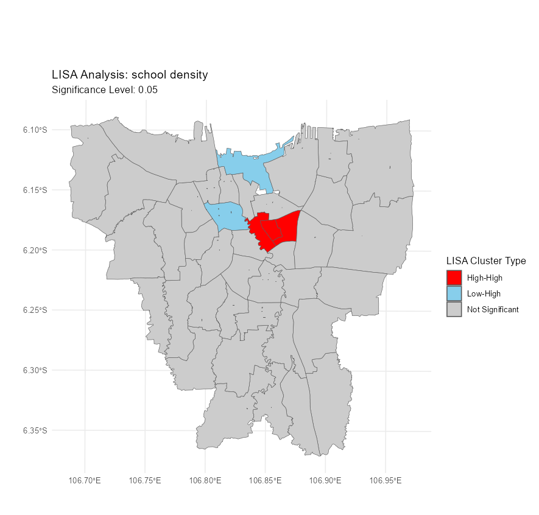
Layout Architecture - Mock up 2
Design Evolution Rationale
The second mockup iteration proposes a significant shift in how spatial analyses are presented, moving from a toggle-based single view to a simultaneous dual-view layout. This design decision is driven by several key insights:
Comparative Analysis Enhancement
Displaying LISA and Hot-Spot analyses side by side enables immediate visual comparison
Reduces cognitive load by eliminating the need to mentally retain patterns while switching between views
Facilitates deeper understanding of how different spatial statistics complement each other
Workflow Efficiency
Eliminates the friction of switching between analysis types
Enables real-time parameter adjustments with immediate visual feedback across both methods
Streamlines the decision-making process by providing comprehensive spatial information at a glance
While the side-by-side visualization approach offers valuable comparative insights, several significant limitations have emerged during testing:
Map Size Constraints
Smaller map sizes make it difficult to discern fine details in Jakarta’s complex district structure
Reduced visualization area impacts the overall user experience when analyzing spatial patterns
Based on these findings, we will be returning to the single-map toggle design for the Jakarta schools analysis dashboard. However, the dual-view concept could be retained for future applications where rapid comparative analysis takes precedence over detailed spatial examination.
Layout Architecture - Mock up 3
Design Evolution Rationale
After evaluating the limitations of Mock-up 2’s side-by-side approach, Mock-up 3 returns to the successful single-map toggle design from Mock-up 1, while introducing a key structural improvement to enhance data comprehension and workflow efficiency.
Key Innovation: Repositioned Summary Panel
The primary modification in Mock-up 3 is the relocation of the statistical summary from within the control panel to a dedicated horizontal panel at the bottom of the interface. This design decision is driven by several important considerations:
Enhanced Control Panel Focus
Provides room for potential additional control options
Improves overall readability of control parameters
Improved Data Context
Creates a natural “analysis flow” from top to bottom
Summary statistics become a conclusion rather than a sidebar
Facilitates easier comparison of statistics across different analysis states
Provides more horizontal space for detailed statistical presentations
Horizontal layout maximizes readable width for statistical data
Organized in clear sections for different types of statistics
Option for tabbed or segmented display of different statistical views
Space for data visualizations like small charts or graphs
Visual Hierarchy
Clear progression from input (controls) to output (map) to results (summary)
Maintains strong relationship between controls and visualization
Creates natural “story” flow for data analysis process
This revised layout maintains the successful elements of Mock-up 1 while improving the organization and presentation of statistical information. The horizontal summary panel provides a natural conclusion to the analysis workflow, enhancing both the user experience and the analytical process.
References
Utilized Claude AI to clarify code concepts and refining responses.